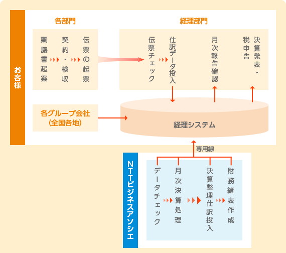

経理スキルを要する決算業務アウトソーシングで決算品質を確保！
財務諸表の作成には高い経理スキルが要求されます。しかしながら、そのような高いスキルを持つ担当者を必要十分に揃え、決算の正確性を継続的に確保するのは容易なことではありません。
9社から成る企業グループの決算業務をアウトソースすることで、各グループ会社の決算品質を高いレベルで確保し、同時に人員の流動化促進を達成された事例です。
お客さま情報
運輸業F社グループ様 売上高500億円 従業員数1,000名
委託業務内容
経理・財務関連
（月次決算、四半期決算、財務諸表作成）


当初の課題認識
お客さまでは管理者1名、一般社員15名で経理業務を実施されていた。グループ会社が全国に数社あり、それぞれが独自に決算業務を行っていたが、担当者の経理スキルにばらつきがあり、決算の品質を確保できていないグループ会社もあった。そのため、決算期にはグループ会社からの電話相談への対応、高い経理スキルを持つ担当者の派遣といった親会社によるサポートが不可欠であり、決算作業が効率的に実施されず時間がかかる状態だった。
また、このような事情から高スキル者に決算稼働が集中し、財務戦略立案等のコア業務を任せることが困難であったため、戦略業務実施体制の構築が急務となっていた。
業者選定のポイント
決算というスキルを要する業務を任せるということに加え、決算の早期化も実現したいと考えていたことから、決算に関する豊富な経験とノウハウを持つ業者を要望されていた。また、今回のアウトソーシングによって、決算業務スキルを持つ担当者の育成を社内では行わなくなることから、経営が安定している信頼性の高い業者に任せたいという意向だった。
NTTビジネスアソシエを選んだ決め手
NTTビジネスアソシエはNTTグループのシェアードサービスセンターであり、様々な業態のグループ企業に経理サービスを提供していることから、自社の経理業務のスムーズな業務移行が期待できた。また、経理業務全般に関する経験も豊富であり、自社の期待する決算品質も問題なく確保できるという安心感もポイントとなった。
その他
お客さまでは経理業務の委託にあたっては、親会社だけでなくグループ会社の決算業務も合わせてアウトソーシングされたが、これによって、グループ内での人員流動化が促進され、効率的な人員配置も可能になった。
コンサルティングの概要
